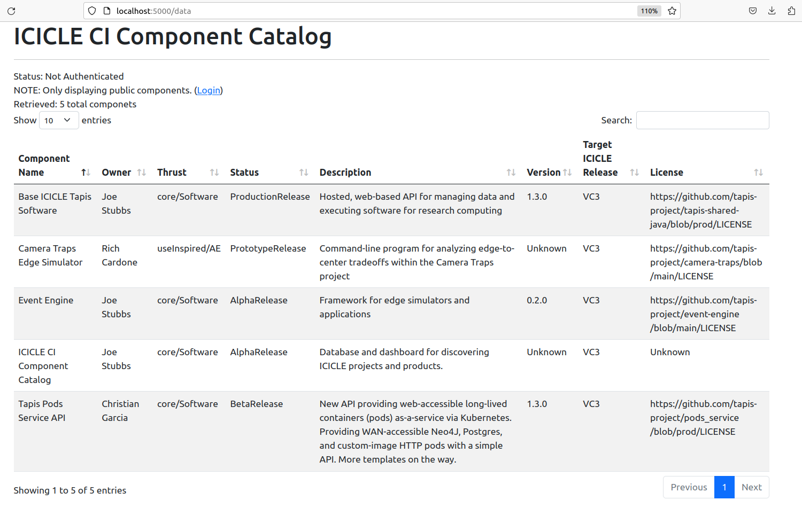

CI Components Catalog
Introduction
This repository contains metadata and code for the ICICLE CI Components Catalog. The CI Components Catalog tracks all major products developed by the ICICLE AI Institute. Using the Catalog, members within ICICLE as well as their collaborators and the general public can learn about the products being produced.
Catalog Schema
We are using LinkML and JSONSchema to describe the data model associated with components in the catalog. The JSONSchema document can be generated from the LinkML yaml document by doing the following:
$ docker run -v $(pwd):/work -w /work/ --rm -it jstubbs/linkml gen-json-schema ci-component.yaml
You can test the schema by validating the local example dataset components-data.yaml,
included in the repository, by doing the following:
docker run -v $(pwd):/work -w /work/ --rm -it jstubbs/linkml linkml-validate -s ci-component.yaml components-data.yaml
If no errors are returned, the message None will be output.
Deploying the Catalog Locally
A simple prototype application is being developed with Flask and Docker. You need to install Docker on your computer before trying to run the application locally. See the Docker documentation for information about how to get Docker on your platform.
You can deploy the prototype locally using one of the following methods:
Using Make
If you have GNU make on your computer, issuing the following command should build the application image and start the container in one go:
make run
Building with Docker
One can build the container image using a command such as:
docker build -t tapis/ci-catalog .
With the image build, start the application using:
docker run --name catalog --rm -p 5000:5000 tapis/ci-catalog
Application URLs
With the application deployed locally, navigate to localhost:5000/data to see the
catalog overview. Note that the root URL, localhost:5000, redirects to the catalog overview.

The catalog also provides a "details" screen for each component. Navigate to
localhost:5000/data/<component_id> to see the details of a component. For example, by
navigating to http://localhost:5000/data/CameraTrapsEdgeSim, we see details about the Camera Traps
project:

Authentication with Tapis
The CI Components Catalog is designed to use Tapis authentication and authorization. Components in the catalog
can be restricted to members of ICICLE by setting publicAccess to false. Access can be further
restricted by setting the restrictedToRole attribute on a component -- in this case, a person must be a
member of the corresponding Tapis role to view the component.
In order to leverage Tapis authn/z in the catalog running locally, you need to configure it with a Tapis OAuth client. Generating an OAuth client can be done following the steps below; see the docs for more details.
Create an OAuth Client (One Time Setup)
First, generate a JWT and export it to the environment:
curl -H "Content-type: application/json" -d '{"username": "your_username", "password": "your_password", "grant_type": "password" }' https://icicle.tapis.io/v3/oauth2/tokens
export JWT=eyJ0eXAiOiJK....
Use the token to register an OAuth client:
curl -H "X-Tapis-Token: $JWT" -H "Content-type: application/json" -d '{"client_id": "ci-comps-test", "callback_url": "http://localhost:5000/oauth2/callback", "client_key": "icicle4ever"}' https://icicle.tapis.io/v3/oauth2/clients
Configure the Catalog to Use the Client
The catalog needs to be configured with the client id and key to work with Tapis OAuth.
Simply add the id and key to the config.yaml file.
Deployment to Pods
A hosted version of the Catalog is now running on the Tapis Pods API. Navigate to the Production URL to interact with the most recently deployed version.
Update the Deployment
NOTE: Updating the deployment requires access to the tapis organization on Docker Hub to
be able to push a new version of the image as well as access to the components pod in the
ICICLE tenant. Reach out on the #icicle_ci_component_catalog channel of tacc-cloud.slack.com if
you need help getting access.
Updating the deployment on Tapis Pods is incredibly easy -- just do the following:
1) Push a new version of the image to docker hub: tapis/ci-catalog:latest
2) Use the restart operation to restart the pod; this will pull the new image:
curl -H "x-tapis-token: $token" https://icicle.tapis.io/v3/pods/components/restart
You can check on the deployment by doing:
curl -H "x-tapis-token: $token" https://icicle.tapis.io/v3/pods/components/catalog
And you can see recent logs of the deployed version with:
curl -H "x-tapis-token: $token" https://icicle.tapis.io/v3/pods/components/logs
Creating the Initial Deployment
NOTE: Registering the same pod again is not only unnecessary but it will not work, because the id is already taken. We leave this here only to document what was done, for posterity.
The initial deployment to the pods service involved creating a new pod with the "components" ID.
We used the following curl command to register the pod.
curl -H "x-tapis-token: $token" https://icicle.tapis.io/v3/pods -H "content-type: application/json" -d '{"pod_id": "components", "pod_template": "tapis/ci-catalog", "description": "Pod for hosted version of the ICICLE CI Component Catalog", "environment_variables": {"client_id": "<the prod client id>", "client_key": "<the prod client key>","app_base_url": "https://components.pods.icicle.tapis.io"}, "time_to_stop_instance": -1}'
Here, $token must be a valid Tapis JWT in the icicle tenant for a user authorized for the components
pod.
Acknowledgements
This work has been funded by grants from the National Science Foundation, including the ICICLE AI Institute (OAC 2112606)